CODING AGENTS AS PIXEL WORLD MODELS
traex/DeepSeek-V4.1-Flash · 0164
点击播放 · 原生 RGB 像素
逐轮保存的候选
回放视频、检查图与代码变化。
每份候选均可单独播放。实际图片检查记录在下方工具轨迹中。
候选 01播放与检查图
点击播放 · 原生 RGB 像素

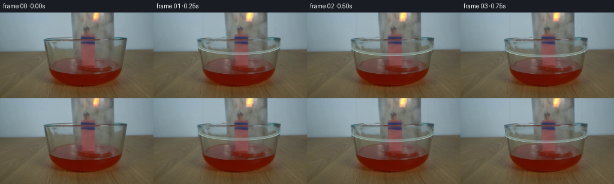
展开代码变化
--- 上一保存版本
+++ 本次保存版本
@@ -0,0 +1,307 @@
+from pathlib import Path
+
+import cv2
+import numpy as np
+from PIL import Image, ImageDraw, ImageFilter
+
+import artifact_io
+
+
+CASE_DIR = Path(__file__).resolve().parent
+WIDTH, HEIGHT = 256, 144
+FRAME_COUNT, FPS = 20, 4
+SS = 4
+
+
+def smoothstep(edge0, edge1, values):
+ t = np.clip((values - edge0) / (edge1 - edge0), 0.0, 1.0)
+ return t * t * (3.0 - 2.0 * t)
+
+
+def make_static_plate(source):
+ """Remove the original mouth rim while preserving the photographed scene."""
+ image = source.copy()
+ yy, xx = np.mgrid[:HEIGHT, :WIDTH]
+ q = np.sqrt(((xx - 142.5) / 69.0) ** 2 + ((yy - 54.0) / 14.5) ** 2)
+ mask = (
+ (q > 0.925)
+ & (q < 1.085)
+ & (xx > 69)
+ & (xx < 216)
+ & (yy > 35)
+ & (yy < 71)
+ )
+ mask = mask.astype(np.uint8) * 255
+ # The side walls terminate at the lip and need a little extra cleanup.
+ for x in (73, 74, 75, 76, 209, 210, 211, 212):
+ mask[52:68, x] = 255
+ return cv2.inpaint(image, mask, 3, cv2.INPAINT_TELEA)
+
+
+def ellipse_band(shape, cx, cy, rx, ry, inner_rx, inner_ry):
+ h, w = shape
+ yy, xx = np.mgrid[:h, :w].astype(np.float32)
+ q_out = np.sqrt(((xx - cx) / rx) ** 2 + ((yy - cy) / ry) ** 2)
+ q_in = np.sqrt(
+ ((xx - cx) / max(inner_rx, 0.1)) ** 2
+ + ((yy - cy) / max(inner_ry, 0.1)) ** 2
+ )
+ outer = smoothstep(0.955, 0.975, q_out) * (1.0 - smoothstep(1.0, 1.018, q_out))
+ inner = smoothstep(0.95, 0.98, q_in) * (1.0 - smoothstep(1.0, 1.03, q_in))
+ band = np.clip(outer + inner, 0.0, 1.0)
+ return band, q_out, q_in, yy
+
+
+def render_rim(cy, offset, touching):
+ """Render a photographic-looking elliptical glass lip at supersampled scale."""
+ h, w = HEIGHT * SS, WIDTH * SS
+ yy, xx = np.mgrid[:h, :w].astype(np.float32) / SS
+ cx = 142.5
+ rx, ry = 68.8, 14.4
+ inner_rx, inner_ry = 64.1, 10.6
+
+ q_out = np.sqrt(((xx - cx) / rx) ** 2 + ((yy - cy) / ry) ** 2)
+ q_in = np.sqrt(
+ ((xx - cx) / inner_rx) ** 2 + ((yy - cy) / inner_ry) ** 2
+ )
+ band = (q_out <= 1.012) & (q_in >= 0.965)
+ if not band.any():
+ return np.zeros((HEIGHT, WIDTH, 4), np.uint8)
+
+ rel_y = np.clip((yy - cy) / ry, -1.15, 1.15)
+ front = smoothstep(-0.45, 0.55, rel_y)
+ side = np.clip(np.abs(xx - cx) / rx, 0.0, 1.0)
+ border_out = np.exp(-((q_out - 1.0) / 0.020) ** 2)
+ border_in = np.exp(-((q_in - 1.0) / 0.020) ** 2)
+
+ base = np.array([91.0, 121.0, 123.0], np.float32)
+ front_color = np.array([178.0, 211.0, 208.0], np.float32)
+ back_color = np.array([112.0, 138.0, 142.0], np.float32)
+ color = base + (back_color - base) * (1.0 - front[..., None])
+ color = color + (front_color - color) * (
+ (front * (0.62 + 0.20 * side))[..., None]
+ )
+
+ alpha = 0.26 + 0.20 * front + 0.12 * (1.0 - front)
+ alpha = alpha + 0.27 * border_out + 0.16 * border_in
+ alpha = np.clip(alpha * band, 0.0, 0.82)
+
+ # A narrow cyan-white front reflection is the strongest cue in the source.
+ reflection = np.exp(-((q_out - 0.990) / 0.014) ** 2)
+ reflection *= smoothstep(-0.05, 0.60, rel_y)
+ color = color + (np.array([225.0, 244.0, 239.0]) - color) * (
+ 0.75 * reflection[..., None]
+ )
+ alpha = np.clip(alpha + 0.22 * reflection, 0.0, 0.90)
+
+ # Warm contamination where the lip meets the red liquid.
+ if touching:
+ wet = smoothstep(0.15, 1.0, rel_y) * (0.45 + 0.55 * front)
+ color = color + (np.array([164.0, 82.0, 61.0]) - color) * (
+ 0.24 * wet[..., None]
+ )
+ alpha = np.clip(alpha + 0.05 * wet, 0.0, 0.92)
+
+ # The bundle hides the far (upper) half of the lip.
+ far_hidden = (yy < cy + 1.2) & (xx > 127.5) & (xx < 157.0)
+ alpha[far_hidden] = 0.0
+
+ rgba = np.zeros((h, w, 4), np.uint8)
+ rgba[..., :3] = np.clip(color, 0, 255).astype(np.uint8)
+ rgba[..., 3] = np.clip(alpha * 255.0, 0, 255).astype(np.uint8)
+ small = cv2.resize(
+ rgba, (WIDTH, HEIGHT), interpolation=cv2.INTER_AREA
+ )
+ return small
+
+
+def composite_rgba(base, rgba):
+ out = base.astype(np.float32)
+ alpha = rgba[..., 3:4].astype(np.float32) / 255.0
+ color = rgba[..., :3].astype(np.float32)
+ out = out * (1.0 - alpha) + color * alpha
+ return np.clip(out, 0, 255).astype(np.uint8)
+
+
+def draw_side_extension(image, cy, touching):
+ """Extend the vertical glass walls to the moving lip."""
+ h, w = HEIGHT * SS, WIDTH * SS
+ layer = Image.new("RGBA", (w, h), (0, 0, 0, 0))
+ draw = ImageDraw.Draw(layer)
+ top = 52.0
+ bottom = cy + 8.5
+ wet_y = 89.0
+ for x, color, width in (
+ (75.2, (70, 91, 94, 112), 2.4),
+ (77.1, (151, 177, 175, 70), 1.4),
+ (209.0, (67, 88, 91, 122), 2.6),
+ (207.0, (153, 177, 172, 58), 1.3),
+ ):
+ segments = [(top, bottom)]
+ if touching and bottom > wet_y:
+ segments = [(top, wet_y), (wet_y, bottom)]
+ for index, (y0, y1) in enumerate(segments):
+ col = color
+ if index == 1:
+ col = (122, 73, 62, color[3])
+ draw.line(
+ [(x * SS, y0 * SS), (x * SS, y1 * SS)],
+ fill=col,
+ width=max(1, round(width * SS)),
+ )
+ layer = layer.resize((WIDTH, HEIGHT), Image.Resampling.LANCZOS)
+ return composite_rgba(image, np.asarray(layer))
+
+
+def add_liquid_response(image, cy, offset, frame_index):
+ """Add small, perspective-correct surface ripples after the lip touches."""
+ contact_offset = 25.0
+ if offset < contact_offset:
+ return image
+
+ layer = Image.new("RGBA", (WIDTH * SS, HEIGHT * SS), (0, 0, 0, 0))
+ draw = ImageDraw.Draw(layer)
+ age = (offset - contact_offset) / 2.2
+ surface_y = 92.0 + min(2.0, 0.05 * (offset - contact_offset))
+
+ for k in range(3):
+ a = age - 0.72 * k
+ if a <= 0:
+ continue
+ rx = 68.0 + 3.4 * a
+ ry = 7.6 + 0.28 * a
+ alpha = int(np.clip(100.0 * np.exp(-0.42 * a), 22, 90))
+ color = (241, 151, 119, alpha)
+ draw.arc(
+ [
+ ((142.5 - rx) * SS, (surface_y - ry) * SS),
+ ((142.5 + rx) * SS, (surface_y + ry) * SS),
+ ],
+ start=10,
+ end=170,
+ fill=color,
+ width=max(1, round(1.25 * SS)),
+ )
+ # Keep the far-side ripple mostly behind the match bundle.
+ draw.arc(
+ [
+ ((142.5 - rx) * SS, (surface_y - ry) * SS),
+ ((142.5 + rx) * SS, (surface_y + ry) * SS),
+ ],
+ start=190,
+ end=350,
+ fill=(205, 111, 83, alpha // 2),
+ width=max(1, round(1.0 * SS)),
+ )
+
+ # Small bubbles squeezed out at the two side contacts.
+ if age > 0.25:
+ for bx, phase, size in ((88.0, 0.1, 1.3), (195.0, 0.7, 1.1), (181.0, 1.2, 0.8)):
+ rise = ((age * 2.0 + phase) % 3.0) * 1.4
+ by = surface_y + 1.8 - rise
+ draw.ellipse(
+ [
+ ((bx - size) * SS, (by - size) * SS),
+ ((bx + size) * SS, (by + size) * SS),
+ ],
+ fill=(240, 180, 151, 92),
+ outline=(255, 217, 190, 128),
+ width=max(1, round(0.7 * SS)),
+ )
+
+ # Erase ripple strokes where the opaque match bundle occupies the foreground.
+ arr = np.asarray(layer).copy()
+ yy, xx = np.mgrid[: HEIGHT * SS, : WIDTH * SS]
+ hide = (
+ (xx / SS > 130.0)
+ & (xx / SS < 155.0)
+ & (yy / SS > 63.0)
+ & (yy / SS < 91.0)
+ )
+ arr[hide, 3] = 0
+ layer = Image.fromarray(arr, "RGBA").filter(
+ ImageFilter.GaussianBlur(radius=0.35 * SS)
+ )
+ layer = layer.resize((WIDTH, HEIGHT), Image.Resampling.LANCZOS)
+ return composite_rgba(image, np.asarray(layer))
+
+
+def add_flame_flicker(image, frame_index):
+ """Keep the clipped flame alive with a restrained subpixel shimmer."""
+ if frame_index == 0:
+ return image
+ x0, x1, y0, y1 = 151, 170, 0, 17
+ patch = image[y0:y1, x0:x1].astype(np.float32)
+ red, green, blue = patch[..., 0], patch[..., 1], patch[..., 2]
+ mask = ((red > 155) & (green > 65) & (red > blue * 1.10)).astype(np.float32)
+ mask = cv2.GaussianBlur(mask, (3, 3), 0.55)
+ phase = frame_index * 1.31
+ dx = 0.45 * np.sin(phase)
+ dy = 0.22 * np.cos(phase * 0.73)
+ shifted = cv2.warpAffine(
+ patch,
+ np.float32([[1, 0, dx], [0, 1, dy]]),
+ (patch.shape[1], patch.shape[0]),
+ flags=cv2.INTER_LINEAR,
+ borderMode=cv2.BORDER_REFLECT,
+ )
+ glow = np.array([255.0, 177.0, 66.0], np.float32)
+ strength = 0.14 + 0.055 * np.sin(phase * 0.83)
+ mixed = patch * (1.0 - mask[..., None] * strength) + (
+ shifted + glow
+ ) * (mask[..., None] * strength)
+ out = image.copy()
+ out[y0:y1, x0:x1] = np.clip(mixed, 0, 255).astype(np.uint8)
+ return out
+
+
+def add_glass_glints(image, offset, frame_index):
+ """Move faint reflected light on the glass wall by a fraction of a pixel."""
+ if frame_index == 0:
+ return image
+ layer = Image.new("RGBA", (WIDTH * SS, HEIGHT * SS), (0, 0, 0, 0))
+ draw = ImageDraw.Draw(layer)
+ sway = 0.35 * np.sin(frame_index * 0.83)
+ bottom = 54.0 + offset
+ for x, alpha, width in (
+ (82.0 + sway, 30, 1.0),
+ (202.8 - sway, 24, 1.1),
+ (118.0 + 0.5 * sway, 12, 1.0),
+ ):
+ draw.line(
+ [(x * SS, 3 * SS), ((x + 0.4 * sway) * SS, (bottom - 7) * SS)],
+ fill=(211, 224, 218, alpha),
+ width=max(1, round(width * SS)),
+ )
+ layer = layer.filter(ImageFilter.GaussianBlur(0.55 * SS))
+ layer = layer.resize((WIDTH, HEIGHT), Image.Resampling.LANCZOS)
+ return composite_rgba(image, np.asarray(layer))
+
+
+def generate_frames():
+ source = np.asarray(Image.open(CASE_DIR / "first_frame.png").convert("RGB"))
+ assert source.shape == (HEIGHT, WIDTH, 3)
+ plate = make_static_plate(source)
+ frames = [source.copy()]
+
+ for index in range(1, FRAME_COUNT):
+ # Smooth, constant-speed lowering with a slight mechanical ease at the start.
+ u = index / (FRAME_COUNT - 1)
+ eased = 0.94 * u + 0.06 * u * u
+ offset = 43.5 * eased
+ cy = 54.0 + offset
+ touching = offset >= 25.0
+
+ image = plate.copy()
+ image = draw_side_extension(image, cy, touching)
+ image = add_glass_glints(image, offset, index)
+ image = add_liquid_response(image, cy, offset, index)
+ image = composite_rgba(image, render_rim(cy, offset, touching))
+ image = add_flame_flicker(image, index)
+ frames.append(image)
+
+ return np.stack(frames).astype(np.uint8)
+
+
+if __name__ == "__main__":
+ artifact_io.save(generate_frames(), CASE_DIR)
候选 02播放与检查图
点击播放 · 原生 RGB 像素

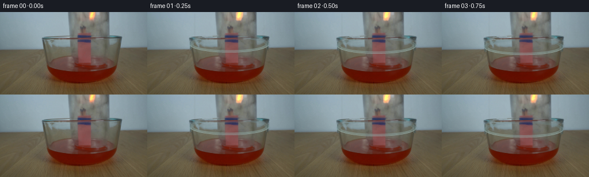
展开代码变化
--- 上一保存版本
+++ 本次保存版本
@@ -82,17 +82,17 @@
(front * (0.62 + 0.20 * side))[..., None]
)
- alpha = 0.26 + 0.20 * front + 0.12 * (1.0 - front)
- alpha = alpha + 0.27 * border_out + 0.16 * border_in
- alpha = np.clip(alpha * band, 0.0, 0.82)
+ alpha = 0.20 + 0.16 * front + 0.09 * (1.0 - front)
+ alpha = alpha + 0.20 * border_out + 0.12 * border_in
+ alpha = np.clip(alpha * band, 0.0, 0.70)
# A narrow cyan-white front reflection is the strongest cue in the source.
reflection = np.exp(-((q_out - 0.990) / 0.014) ** 2)
reflection *= smoothstep(-0.05, 0.60, rel_y)
- color = color + (np.array([225.0, 244.0, 239.0]) - color) * (
- 0.75 * reflection[..., None]
- )
- alpha = np.clip(alpha + 0.22 * reflection, 0.0, 0.90)
+ color = color + (np.array([211.0, 232.0, 228.0]) - color) * (
+ 0.55 * reflection[..., None]
+ )
+ alpha = np.clip(alpha + 0.14 * reflection, 0.0, 0.77)
# Warm contamination where the lip meets the red liquid.
if touching:
@@ -100,7 +100,7 @@
color = color + (np.array([164.0, 82.0, 61.0]) - color) * (
0.24 * wet[..., None]
)
- alpha = np.clip(alpha + 0.05 * wet, 0.0, 0.92)
+ alpha = np.clip(alpha + 0.04 * wet, 0.0, 0.80)
# The bundle hides the far (upper) half of the lip.
far_hidden = (yy < cy + 1.2) & (xx > 127.5) & (xx < 157.0)
@@ -155,7 +155,7 @@
def add_liquid_response(image, cy, offset, frame_index):
"""Add small, perspective-correct surface ripples after the lip touches."""
- contact_offset = 25.0
+ contact_offset = 27.0
if offset < contact_offset:
return image
@@ -170,8 +170,8 @@
continue
rx = 68.0 + 3.4 * a
ry = 7.6 + 0.28 * a
- alpha = int(np.clip(100.0 * np.exp(-0.42 * a), 22, 90))
- color = (241, 151, 119, alpha)
+ alpha = int(np.clip(80.0 * np.exp(-0.62 * a), 14, 68))
+ color = (237, 139, 108, alpha)
draw.arc(
[
((142.5 - rx) * SS, (surface_y - ry) * SS),
@@ -190,7 +190,7 @@
],
start=190,
end=350,
- fill=(205, 111, 83, alpha // 2),
+ fill=(205, 111, 83, alpha // 3),
width=max(1, round(1.0 * SS)),
)
@@ -204,8 +204,8 @@
((bx - size) * SS, (by - size) * SS),
((bx + size) * SS, (by + size) * SS),
],
- fill=(240, 180, 151, 92),
- outline=(255, 217, 190, 128),
+ fill=(240, 180, 151, 58),
+ outline=(255, 217, 190, 88),
width=max(1, round(0.7 * SS)),
)
@@ -264,9 +264,9 @@
sway = 0.35 * np.sin(frame_index * 0.83)
bottom = 54.0 + offset
for x, alpha, width in (
- (82.0 + sway, 30, 1.0),
- (202.8 - sway, 24, 1.1),
- (118.0 + 0.5 * sway, 12, 1.0),
+ (82.0 + sway, 23, 1.0),
+ (202.8 - sway, 18, 1.1),
+ (118.0 + 0.5 * sway, 9, 1.0),
):
draw.line(
[(x * SS, 3 * SS), ((x + 0.4 * sway) * SS, (bottom - 7) * SS)],
@@ -290,7 +290,7 @@
eased = 0.94 * u + 0.06 * u * u
offset = 43.5 * eased
cy = 54.0 + offset
- touching = offset >= 25.0
+ touching = offset >= 27.0
image = plate.copy()
image = draw_side_extension(image, cy, touching)
候选 03播放与检查图
点击播放 · 原生 RGB 像素

展开代码变化
--- 上一保存版本
+++ 本次保存版本
@@ -219,7 +219,7 @@
& (yy / SS < 91.0)
)
arr[hide, 3] = 0
- layer = Image.fromarray(arr, "RGBA").filter(
+ layer = Image.fromarray(arr).filter(
ImageFilter.GaussianBlur(radius=0.35 * SS)
)
layer = layer.resize((WIDTH, HEIGHT), Image.Resampling.LANCZOS)
可观测工具轨迹
实际执行的命令与返回图片。
命令 1exit 0
/bin/bash -c "pwd && rg --files -g '"'!*.mp4'"' -g '"'!*.mov'"' -g '"'!*.webm'"' | sed -n '1,200p'"
命令 2exit 0
/bin/bash -c "sed -n '1,240p' GENERATION_RULES.md"
命令 3exit 0
/bin/bash -c "sed -n '1,240p' prompt.txt"
命令 4exit 0
/bin/bash -c "find . -maxdepth 2 -type f -printf '%p %s bytes\\n' | sort | sed -n '1,240p'"
命令 5exit 0
/bin/bash -c "sed -n '1,260p' artifact_io.py"
命令 6exit 0
/bin/bash -c "python - <<'PY'
from PIL import Image
im=Image.open('first_frame.png')
print(im.mode, im.size)
print(im.getextrema())
PY"命令 7exit 0
/bin/bash -c "sed -n '1,260p' player_template.html"
命令 8exit 0
/bin/bash -c "python - <<'PY'
from PIL import Image
im=Image.open('first_frame.png')
im.crop((90,0,220,120)).resize((520,480), Image.Resampling.NEAREST).save('.tmp/crop.png')
PY"命令 9exit 0
/bin/bash -c "python - <<'PY' mods=['cv2','numpy','scipy','PIL','skimage'] for m in mods: try: x=__import__(m); print(m, getattr(x,'__version__','ok')) except Exception as e: print(m, 'ERR', e) PY"
命令 10exit 0
/bin/bash -c "python - <<'PY'
from PIL import Image
im=Image.open('first_frame.png')
# sample vertical/horizontal strips
for x in [70,75,90,120,125,130,140,150,160,180,190,200,210]:
print('x',x,[im.getpixel((x,y)) for y in [0,20,40,50,60,70,80,90,100,110,120,130]])
PY"命令 11exit 0
/bin/bash -c "python - <<'PY'
from PIL import Image
im=Image.open('first_frame.png')
im.crop((100,0,200,100)).resize((800,800), Image.Resampling.NEAREST).save('.tmp/jar_crop.png')
PY"命令 12exit 0
/bin/bash -c "python - <<'PY'
import cv2, numpy as np
im=cv2.imread('first_frame.png')
g=cv2.cvtColor(im,cv2.COLOR_BGR2GRAY)
for x in [72,73,74,75,80,90,100,110,120,130,140,150,160,170,180,190,200,208,209,210,211,212]:
vals=[]
for y in range(65,100):
if abs(int(g[y,x])-int(g[y-1,x]))>=8: vals.append((y,int(g[y-1,x]),int(g[y,x])))
print(x, vals[:12])
PY"命令 13exit 0
/bin/bash -c "python - <<'PY'
import cv2, numpy as np
im=cv2.imread('first_frame.png')[:,:,::-1]
# print coarse 8x8 mean luminance or colors
for y in range(64,100,4):
print(y, [tuple(im[y:y+4,x:x+8].mean((0,1)).astype(int)) for x in range(72,216,16)])
PY"命令 14exit 0
/bin/bash -c "python - <<'PY'
from PIL import Image,ImageDraw
im=Image.open('first_frame.png').resize((1024,576),Image.Resampling.NEAREST)
d=ImageDraw.Draw(im)
for x in range(0,256,10):
X=x*4; d.line([(X,0),(X,576)], fill=(255,0,0) if x%50==0 else (255,180,180), width=1)
if x%20==0:d.text((X+1,2),str(x),fill=(255,0,0))
for y in range(0,144,10):
Y=y*4; d.line([(0,Y),(1024,Y)], fill=(0,255,0) if y%50==0 else (180,255,180), width=1)
if y%20==0:d.text((2,Y+1),str(y),fill=(0,160,0))
im.save('.tmp/grid.png')
PY"命令 15exit 0
/bin/bash -c "python - <<'PY'
from PIL import Image
im=Image.open('first_frame.png')
im.crop((115,0,215,70)).resize((800,560), Image.Resampling.NEAREST).save('.tmp/top_crop.png')
PY"命令 16exit 0
/bin/bash -c "python - <<'PY'
from PIL import Image
import numpy as np
im=np.array(Image.open('first_frame.png'))
for x in range(75,211,10):
# first y below 70 where R > G*1.5 and R>60
col=im[70:130,x]
ys=np.where((col[:,0]>col[:,1]*1.5)&(col[:,0]>65))[0]
print(x, (ys[0]+70 if len(ys) else None), im[88,x].tolist())
PY"命令 17exit 0
/bin/bash -c "python - <<'PY'
import cv2,numpy as np
im=cv2.imread('first_frame.png')
h,w=im.shape[:2]
yy,xx=np.mgrid[:h,:w]
# ellipse rim
q=np.sqrt(((xx-142.5)/68.0)**2+((yy-54.0)/15.0)**2)
mask=((np.abs(q-1)<0.08)&(xx>70)&(xx<214)&(yy>34)&(yy<73)).astype(np.uint8)*255
# front line add
mask[64:70,78:208]=255
clean=cv2.inpaint(im,mask,4,cv2.INPAINT_TELEA)
cv2.imwrite('.tmp/clean.png',clean)
cv2.imwrite('.tmp/mask.png',mask)
PY"命令 18exit 0
/bin/bash -c "python - <<'PY'
import cv2,numpy as np
im=cv2.imread('first_frame.png')
h,w=im.shape[:2]
yy,xx=np.mgrid[:h,:w]
q=np.sqrt(((xx-142.5)/69.0)**2+((yy-52.0)/15.0)**2)
mask=(((q>0.92)&(q<1.10))&(xx>70)&(xx<215)&(yy>34)&(yy<70)).astype(np.uint8)*255
# small side connectors
for xx0 in [73,74,75,76,209,210,211,212]:
mask[55:67,xx0]=255
for method,name in [(cv2.INPAINT_TELEA,'telea'),(cv2.INPAINT_NS,'ns')]:
out=cv2.inpaint(im,mask,4,method)
cv2.imwrite(f'.tmp/inpaint_{name}.png',out)
cv2.imwrite('.tmp/ringmask.png',mask)
PY"命令 19exit 0
/bin/bash -c "python - <<'PY'
import cv2,numpy as np
im=cv2.imread('first_frame.png')
# get low-gradient pixels within jar region, output stats / save segmentation
b,g,r=cv2.split(im)
# low chroma gray-ish / blue glass
# print unique-ish scanline colors at y=20,40,60
for y in [0,10,20,30,40,50,60,70,75]:
print('y',y)
for x in range(100,201,10):
print(x, tuple(im[y,x][::-1]), end='; ')
print()
PY"命令 20exit 0
/bin/bash -c "python - <<'PY'
from PIL import Image
import math
im=Image.open('first_frame.png')
cx,cy,a,b=142.5,54.5,68,14.5
for ang in range(0,360,15):
x=round(cx+a*math.cos(math.radians(ang))); y=round(cy+b*math.sin(math.radians(ang)))
vals=[]
for dy in range(-3,4):
try: vals.append((dy,im.getpixel((x,y+dy))))
except: pass
print(ang,(x,y),vals)
PY"命令 21exit 0
/bin/bash -c "python - <<'PY'
import cv2,numpy as np
im=cv2.imread('first_frame.png').astype(np.float32)
# calculate edges
g=cv2.cvtColor(im.astype(np.uint8),cv2.COLOR_BGR2GRAY)
e=cv2.Canny(g,20,60)
# ellipse ring y=68? save crop around mouth
cv2.imwrite('.tmp/edges.png',e)
PY"命令 22exit 1
/bin/bash -c 'python generate.py'
命令 23exit 0
/bin/bash -c 'python generate.py'
命令 24exit 0
/bin/bash -c 'python generate.py'
命令 25exit 0
/bin/bash -c "python - <<'PY'
from pathlib import Path
import hashlib
import numpy as np
from PIL import Image
src=np.asarray(Image.open('first_frame.png').convert('RGB'))
f0=np.asarray(Image.open('frames/00.png').convert('RGB'))
with np.load('pixels.npz') as z:
p=z['pixels']
print('npz', p.shape, p.dtype)
print('frame_count', len(list(Path('frames').glob('*.png'))))
print('frame0_equal', np.array_equal(src,f0), 'maxdiff', int(np.abs(src.astype(int)-f0.astype(int)).max()))
print('all_shape', tuple(np.stack([np.asarray(Image.open(f'frames/{i:02d}.png')) for i in range(20)]).shape))
print('sha256_src',hashlib.sha256(Path('first_frame.png').read_bytes()).hexdigest())
print('sha256_f00',hashlib.sha256(Path('frames/00.png').read_bytes()).hexdigest())
print('index_bytes',Path('index.html').stat().st_size)
PY"命令 26exit 0
/bin/bash -c 'git status --short 2>/dev/null || true'
命令 27exit 0
/bin/bash -c "python - <<'PY'
import numpy as np
from PIL import Image
fr=np.stack([np.asarray(Image.open(f'frames/{i:02d}.png')) for i in range(20)])
for i in range(1,20):
d=np.abs(fr[i].astype(int)-fr[i-1].astype(int))
print(f'{i-1:02d}->{i:02d}: changed={np.count_nonzero(d):6d}, mean={d.mean():5.2f}, max={d.max():3d}')
PY"命令 28exit 0
/bin/bash -c "python - <<'PY'
from PIL import Image
import numpy as np
fr=[np.asarray(Image.open(f'frames/{i:02d}.png')) for i in (12,13)]
d=np.abs(fr[1].astype(int)-fr[0].astype(int)).max(2)
ys,xs=np.where(d>15)
print(xs.min(),xs.max(),ys.min(),ys.max(),len(xs))
# region row/col density
for y0 in range(0,144,10): print(y0,int(((ys>=y0)&(ys<y0+10)).sum()))
PY"命令 29exit 0
/bin/bash -c 'before=$(sha256sum pixels.npz | cut -d'"' ' -f1); python generate.py; after="'$(sha256sum pixels.npz | cut -d'"' ' -f1); printf 'before=%s\\nafter=%s\\n' \""'$before" "$after"; python - <<'"'PY'
import numpy as np
from PIL import Image
src=np.asarray(Image.open('first_frame.png').convert('RGB'))
frames=np.stack([np.asarray(Image.open(f'frames/{i:02d}.png').convert('RGB')) for i in range(20)])
with np.load('pixels.npz') as z: packed=z['pixels']
unpacked=np.stack([(packed>>16)&255,(packed>>8)&255,packed&255],axis=-1).transpose(2,0,1,3)
print('shape:',frames.shape)
print('dtype:',frames.dtype)
print('frame0_identical:',np.array_equal(frames[0],src))
print('npz_matches_pngs:',np.array_equal(unpacked,frames))
print('all_frames_nonblank:',bool((frames.std(axis=(1,2,3))>5).all()))
PY"视觉工具实际返回图片 1

视觉工具实际返回图片 2
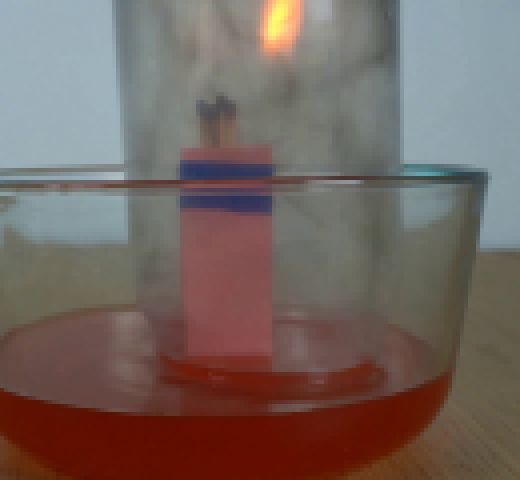
视觉工具实际返回图片 3
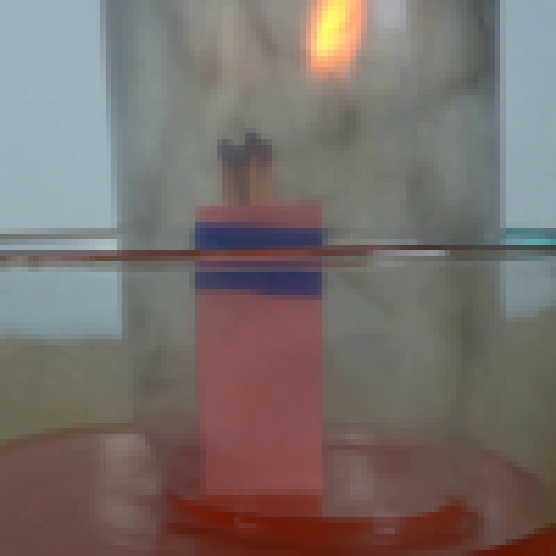
视觉工具实际返回图片 4
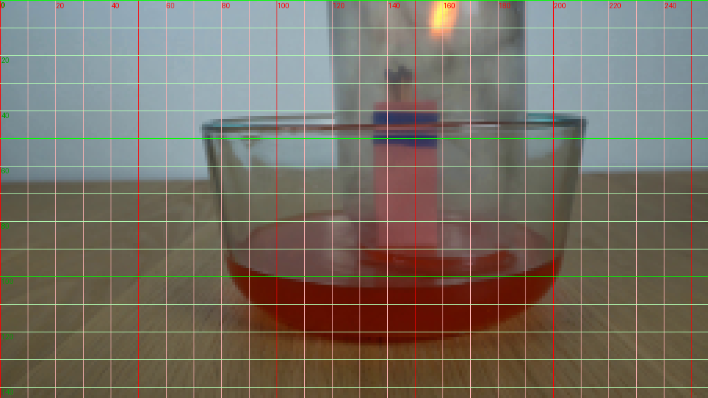
视觉工具实际返回图片 5
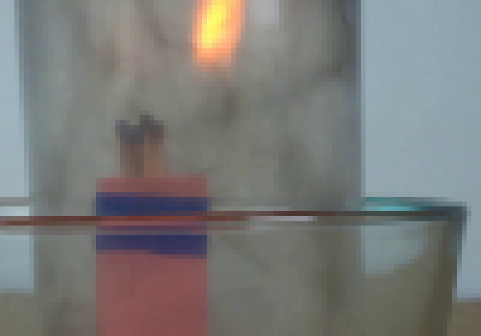
视觉工具实际返回图片 6
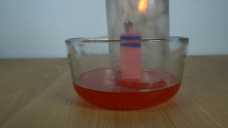
视觉工具实际返回图片 7
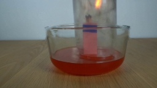
视觉工具实际返回图片 8
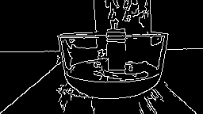
视觉工具实际返回图片 9
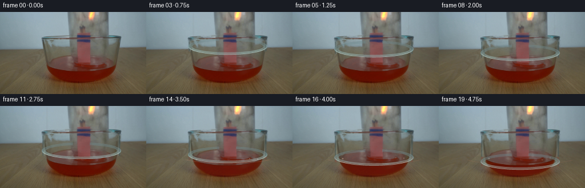
视觉工具实际返回图片 10
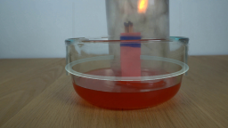
视觉工具实际返回图片 11
视觉工具实际返回图片 12
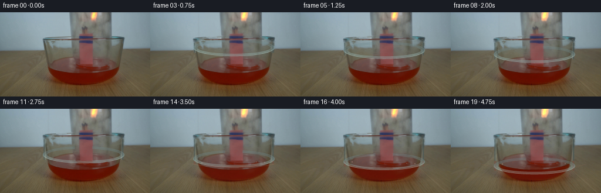
视觉工具实际返回图片 13

视觉工具实际返回图片 14
视觉工具实际返回图片 15
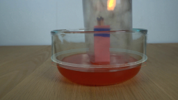
视觉工具实际返回图片 16
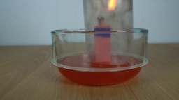
视觉工具实际返回图片 17
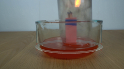
保存候选 3 份；完成命令 29 次；可验证图片返回 17 张。原始 API 响应与完整日志保留在本地。